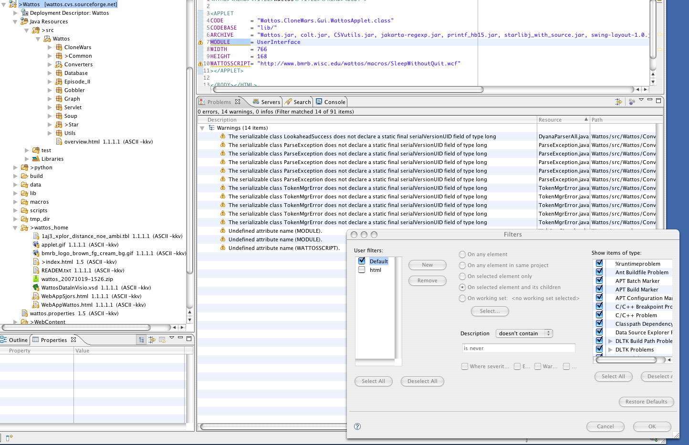

-
Started as new Project from SVN without a .project being in the SVN repository.
then select:
New Project
Web
Dynamic Web Project
Web Project Settings
Context Root -> NRG
-
Note for web apps to work; eclipse needs to have all libs in:
Wattos
Java Resources
Libraries
Web App Libraries
-
Furthermore make sure no other tomcat servers are running. On Mac OSX:
/~/ ps -A | grep -i java
14987 ?? S 0:25.53 /System/Library/Frameworks/JavaVM.framework/Versions/1.5.0/Home/bin/java -Dcatalina.base=/Users/jd/workspace/.metadata/.plugins/org.eclipse.wst.server.core/t
/~/ kill 14987
-
To get rid of the -red cross- thru the whole Wattos project in the explorer make sure:
Properties for Wattos
Project Facets
Project Facets
DISABLE WebDoclet (XDoclet) 1.2.3
-
To get Ant to work with scp install com.jcraft.jsch_0.1.131.jar as directed by Ant.
I used the ~/.ant/lib location.
It will show up under Eclipse/Preference/Ant/Runtime/Classpath/Global entries.
-
The following 91 warnings are left. I have filtered for trivial ones that for this image were filtered out by
filtering on "is ever". Normally I leave all 91 warnings available as to catch as much as possible. Of the 14, 11 are trivial warnings in
code autogenerated by JavaCC and 3 are tags that Eclipse WPT validator doesn't know about.
Main point it that no errors are present anymore after these configurations; hoera!

-
Also make sure the code is compiled to the right directory:
Properties for Wattos
Java Build Path
Source
Default output folder:
wattos/build/web/WEB-INF/classes